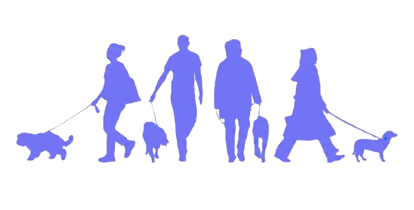

Llegando a conocerte
Complete la solicitud de adopción a continuación. ¡Nuestro
gerente de adopción se comunicará con usted! Si su solicitud
sigue adelante, nos pondremos en contacto con sus referencias
personales. Es posible que te pidamos fotos o vídeos
adicionales de tu casa.
Esta aplicación no vinculante nos ayuda a conocerlo mejor para
que podamos encontrar la mejor pareja posible. Por favor,
envíala solo si estás considerando seriamente la adopción y
todos los miembros del hogar están de acuerdo en dar la
bienvenida a un nuevo perro o cachorro a la familia.
Proceso paso a paso
Entrevista
Nuestro gerente de adopción programará una entrevista telefónica para conocerlo mejor y hablar sobre la adopción.
Conoce y saluda
Usted y todos los miembros de su hogar tendrán la oportunidad de conocer al perro en su hogar de acogida. Si estás demasiado lejos, podemos organizar un encuentro virtual. Este es un buen momento para hacerle cualquier pregunta al padre adoptivo.
Contrato de adopción
Si todo va bien, te enviaremos el contrato de adopción para que lo revises y lo firmes. También es el momento de pagar la cuota de adopción (y el coste del transporte, si procede).

Le ayudamos a encontrar su Nuevo mejor amigo
¡Gracias por su interés en adoptar uno de nuestros perros/cachorros rescatados! Complete esta solicitud de manera honesta y detallada. Nuestro objetivo es encontrar la mejor pareja, tanto para el perro como para usted o su familia.